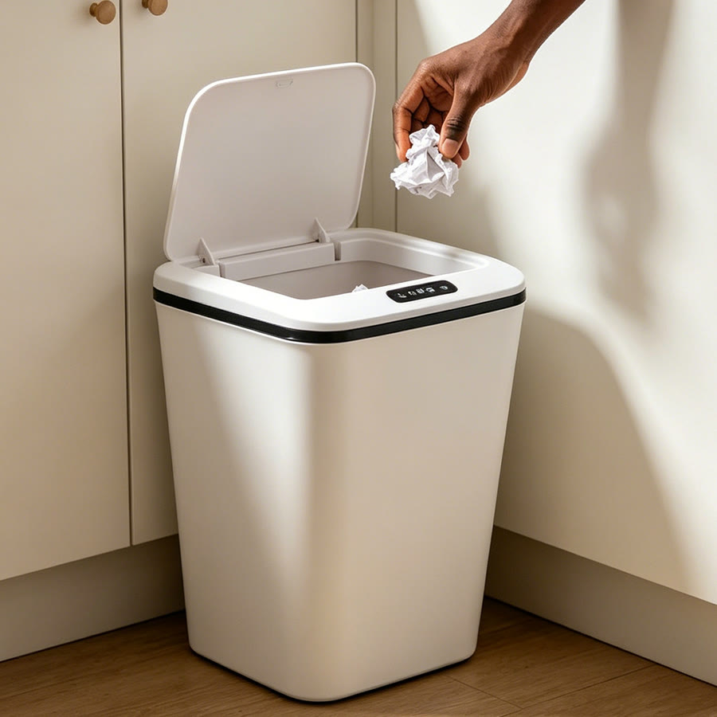
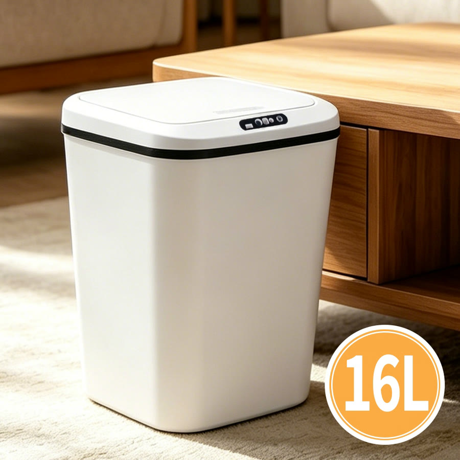
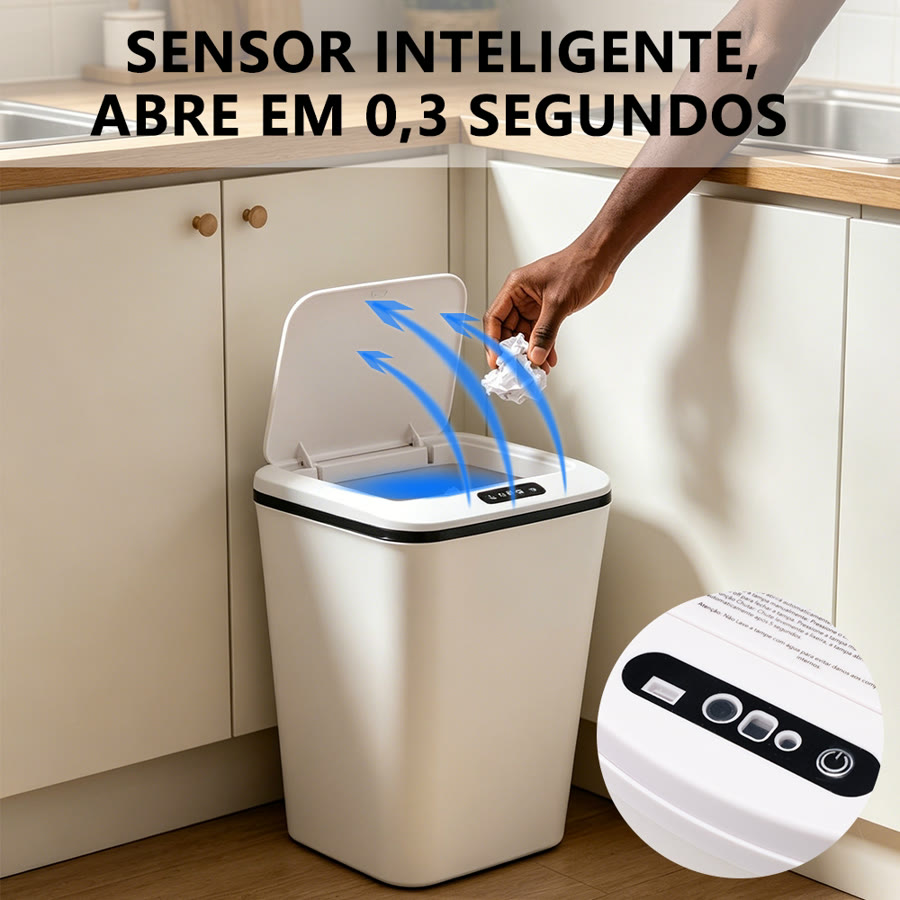
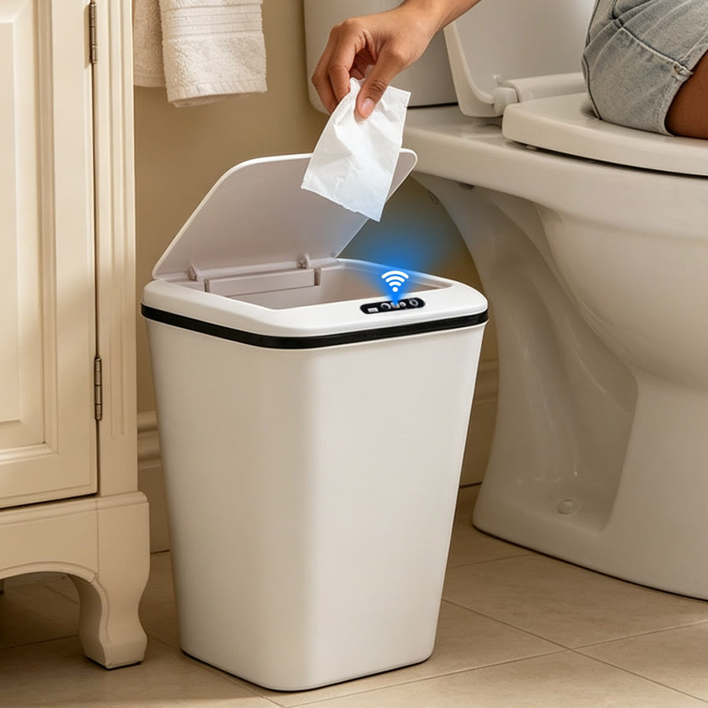

Achado nº 8
Lixeira com sensor automático de 16 litros




O que diz a página oficial do produto
- A tampa abre sozinha quando a mão ou um objeto se aproxima, por sensor infravermelho
- Fecha sozinha depois de cerca de 5 segundos
- Também abre por botões ou com um toque na parte de baixo
- Capacidade de 16 litros; mede 26 cm x 33 cm x 24 cm
- Bateria recarregável por cabo USB, que acompanha; segundo o anúncio, dura até 6 meses
- Feita de plástico ABS
- Segundo o anúncio, a cor e o formato enviados podem variar
- Na Shopee, tem nota 4,9 com mais de 1.600 avaliações e mais de 4 mil vendidos
Link de afiliado: se você comprar por ele, a Achadaria pode receber uma comissão, sem custo extra para você. Preço, estoque e entrega são da loja e podem mudar; confira lá antes de comprar.